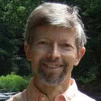

Historia
Desde el año de 1970 se empezaron a adoptar una serie de términos y metodologías que repercutieron en el surgimiento de la programación orientada a aspectos. En primer lugar Edsger W. Dijkstra introdujo la llamada "Separation of Concerns" - separación de incumbencias en español - con lo cual se aborda el enfoque de distinción de las funcionalidades básicas de las de uso común en un sistema.
Posteriormente, desde la década de los 80 hasta la década de los 90, se implementaron tecnologías que permitían el rediseño del software en tiempo dinámico, a saber: el protocolo de metaobjetos con la aplicación SmallTalk-80; la Reflexión en lenguajes procedurales y los filtros de composición.

La historia de la programación orientada a aspectos toma impulso en el año 1991 con el grupo Demeter quienes trabajaban investigando acerca de lo que podríamos denominar una etapa temprana de POA, la programación adaptativa, la cual, basada en basada en el uso de autómatas finitos y una teoría formal de lenguaje para expresar concisamente y procesar eficientemente conjuntos de caminos en un grafo arquitectónico, representó un gran avance dentro de la tecnología de software.
Este mismo grupo Demeter en el año de 1987 propuso la llamada "Ley Demeter", una regla aplicada en el diseño de software en sistemas basados en objetos: "Sólo conversa con tus amigos inmediatos", ésta ley inspiró en el desarrollo de la programación adaptativa y eventualmente la programación orientada a aspectos dado que para escribir código respetando ésta ley habían secciones del código que debían ser claramente encapsuladas para dejar la funcionalidad básica libre de cualquier concepto relacionado con el comportamiento del software.
Es importante resaltar tambien las contribuciones de Karl Lieberherr , quien es un científico de la computación. A mediados de los 1980s empieza una investigación sobre la Programación Orientada a Objetos, enfocado en los problemas del diseño de software y la modularidad. A partir de esto empieza un desarrollo de la idea de Programación Orientada a Aspectos. Se atribuye la creción del grupo Demeter, que como ya sabemos fue importante en el desarrollo del concepto de POA. Además también diseña la Ley de Demeter y crea varios sistemas que ayudan a pasar de una Programación Orientada a Objetos, a una Programación Orientada a Aspectos como lo son Demeter/C++, DemeterJ, Demeter/Flavors, entre otros.

No fue sino hasta 1995 cuando Cristina Lopes junto con Walter Huersch realizaron un reporte acerca de la separación de los conceptos de comportamiento de los conceptos de funcionalidad, incluso mencionaron técnicas iniciales para poder realizar dicha separación: filtros composicionales y programación adaptativa para tratar con los conceptos entrecruzados.

En éste reporte se dejó claro como la separación de conceptos era uno de los retos más importantes en el progreso de la ingeniería de software.
En éste mismo año el grupo "Demeter" dio lo que sería la primera definición de Aspecto: "Un aspecto es una unidad que se define en términos de información parcial de otras unidades.", en éste grupo se encontraba Gregor Kickzales quien dentro de la literatura se considera como el creador de la programación orientada a aspectos.

Cristina Lopes comenzó a trabajar con Kickzales y su grupo, eventualmente dejaron de lado a programación adaptativa para, a partir de la misma, crear la programación orientada a aspectos
Otra persona que contribuyó a Gregor Kickzales fue Mira Mezini. Ella trabajó con el en la creción del documento "Aspect-Oriented Programming and Modular Reasonning" donde se habla a cabalidad sobre la POA, y la implementación de módulos en el código. Además de eso, actualmente trabaja en la implementación de la Programación Orientada a Aspectos en Bases de Datos.

La programación orientada a aspectos es un paradigma muy joven, pero promete un gran potencial, tanto que se dice que la programación orientada a aspectos podría ser un nuevo salto en las generaciones de la ingeniería de software.